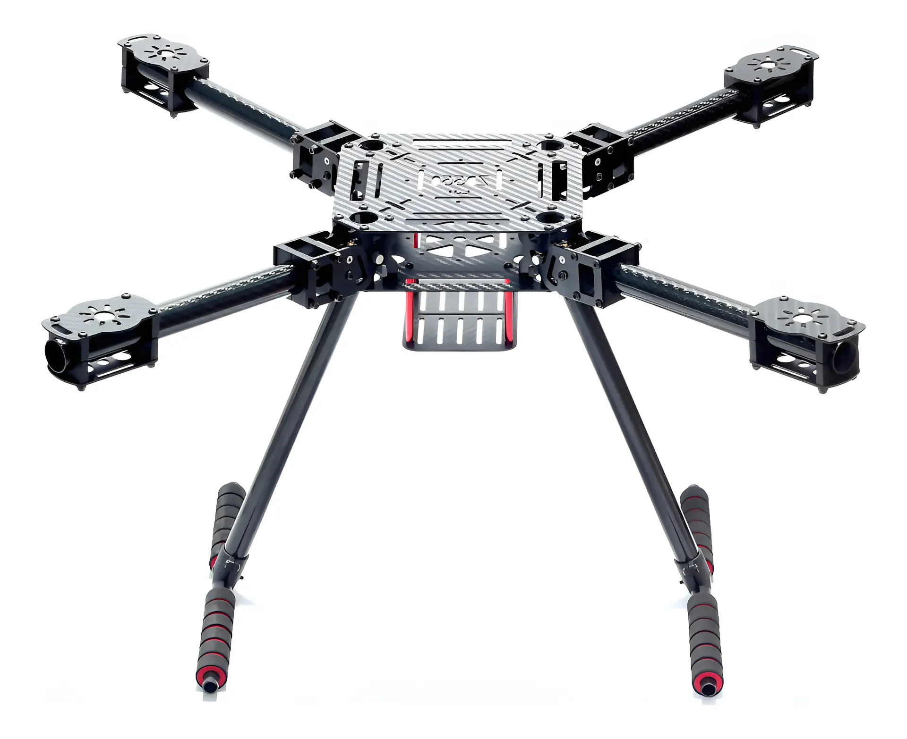

Crear paleta de colores
Definir los colores principales del sistema de diseño.
Definir los colores principales del sistema de diseño.
Definir el estilo de fuente y tamaño de letra para la página.
Definir los lenguajes de desarrollo que serán usados para la creación de la página web
Definir la estructura semantica de las etiquetas para darle forma a la web
Definir los estilos que se tendran en las diferentes secciones de la página web
Crear el repositorio de la página web en GitHub y sincronizarlo usando Git
Definir la distribución inicial de los elementos a nivel global de la página
Completar el primer capitulo del IEEE correspondiente al planteamiento inicial del proyecto web
Definir las funciones clave de la página y las historias de usuario/casos de uso para el análisis inicial del proyecto
Motores brushless de alto rendimiento diseñados para drones FPV de 8-10 pulgadas y estilo libre (freestyle), enfocados en eficiencia extrema y carga pesada. Ofrecen más de un 50% más de tiempo de vuelo, diseño de disipación de calor autoventilado y montura de hélice antideslizante.

Características: - Distancia entre ejes diagonal: 21.654 in - Altura del tren de aterrizaje: 10.236 in - Peso: 630 ±2 g - Material de la placa principal: fibra de carbono completa 3k - Grosor de la placa principal: 0.059 in

-La alta capacidad de 5200mAh y la alta tasa de descarga 50C proporcionan un tiempo de funcionamiento mas largo y mas potencia,-Fabricado con materiales de primera calidad y calidad certificada para seguridad y larga vida util de 350 ciclos,-Pesa solo 13.23 oz para reducir el peso del automovil y es compatible con autos Arrma Kraton, Outcast, Senton RC,-Viene con enchufe de equilibrio JST-XH, enchufe EC5 de descarga y estuche rigido para proteccion y portabilidad,-1 ano de garantia y atencion al cliente 24/7